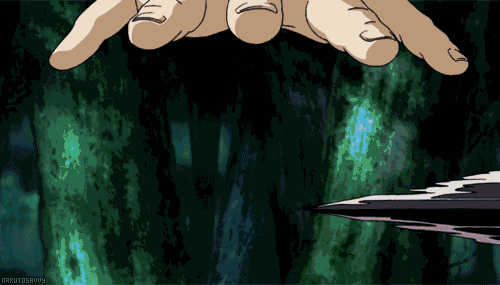
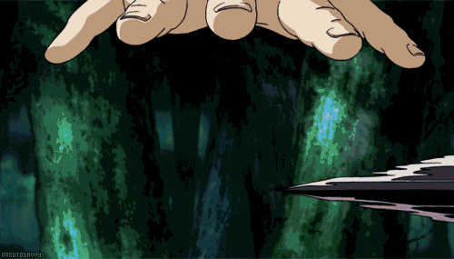

NARUTO UZUMAKI
Naruto Uzumaki is a fictional character and the main protagonist of the manga and anime series "Naruto," created by Masashi Kishimoto.
The series follows Naruto's journey from being an outcast and a mischievous troublemaker in his village to becoming a powerful ninja and the leader of his village, the Hokage.
Naruto is known for having a dream of becoming the strongest ninja and earning the respect and acknowledgment of the people around him, especially the villagers who initially shunned him due to the presence of the Nine-Tailed Fox (Kurama) sealed inside him. Throughout the series, Naruto faces various challenges, makes friends, and matures as a ninja and as a person.

Naruto's Journey
CLASSIC || SHIPPUDEN ||
Naruto has had several mentors and sensei throughout his journey as a ninja..
KAKASHI HATAKE serves as one of the primary mentors and sensei (teacher) to the main protagonist..
Naruto Uzumaki, as well as to other members of Team 7, which also includes Sasuke Uchiha and Sakura Haruno.
Kakashi Hatake
Kakashi, also known as Kakashi-sensei, became Naruto's team leader when Naruto, Sasuke, and Sakura formed Team 7
Kakashi is a highly skilled and experienced ninja who taught Team 7 various ninja techniques and strategies.
He also shared valuable life lessons with Naruto and his teammates. Kakashi's guidance and teachings significantly influenced Naruto's growth as a ninja.
Personal Challenges: Kakashi has his own personal challenges and struggles, including dealing with the loss of his teammates, Obito Uchiha and Rin Nohara.
These experiences shape his character and influence his approach to mentoring Team 7.
Mysterious Persona: Kakashi is initially portrayed as a mysterious and enigmatic character. He is known for his calm and composed demeanor, often hiding his face behind a mask.
His reputation as the "Copy Ninja" stems from his ability to copy and use a wide range of techniques by observing his opponents.
Kakashi Hatake was a student of --Minato Namikaze--, who later became the Fourth Hokage of the Hidden Leaf Village. Kakashi was part of Team Minato, along with Obito Uchiha and Rin Nohara.
--Minato-- served as the team's leader and Kakashi's sensei during his early years as a ninja.
MINATO NAMIKAZE
-Minato- also known as the "Yellow Flash"..
 

Legacy: Minato's legacy looms large throughout the Naruto series. His techniques, particularly the Rasengan, are passed down to the next generation.
Naruto strives to live up to his father's reputation and carries on the Will of Fire.
A concept of strong loyalty and dedication to protecting the village.
Fourth Hokage: Minato served as the Fourth Hokage of the Hidden Leaf Village. He was widely regarded as one of the most powerful and skilled ninja of his time.
Flying Thunder God Technique: Minato was famous for his mastery of the Flying Thunder God Technique,
a space-time ninjutsu that allowed him to instantly teleport to marked locations.
This earned him the nickname "Yellow Flash," as he could move at such high speeds.
Sealing the Nine-Tails: During the Nine-Tails' attack on the Hidden Leaf Village.
Minato sacrificed his life to seal the beast inside his newborn son.
Naruto Uzumaki. This act saved the village but left Naruto an orphan.
And one guy made a significant sacrifice for the Hidden Leaf Village in the Naruto series.
ITACHI UCHIHA --(GOD OF GENJUSTU)
Prodigy and Ninja Career:
Itachi graduated from the Ninja Academy at a very young age and became a member of the Anbu Black Ops.
Despite his accomplishments, Itachi faced challenges within his clan, leading to complex and tragic circumstances
Protecting Sasuke:
Itachi's actions were ultimately revealed to be driven by a desire to protect Konoha and, in particular, to keep Sasuke safe.
His sacrifices and true intentions had a profound impact on the storyline.
Itachi Uchiha is one of the most complex and well-known characters in the Naruto series, and his story is integral to the overall narrative of the manga and anime.
ENDING
the Naruto series concludes with the sequel series, "Naruto: Shippuden." Here's a brief summary of the ending of the Naruto series:
Naruto Uzumaki's Journey: The series follows Naruto Uzumaki, a young ninja with dreams of becoming the strongest ninja and the leader of his village, the Hokage. Throughout the series, Naruto faces numerous challenges, makes friends, and matures as both a ninja and an individual.
The Fourth Great Ninja War: One of the central story arcs is the Fourth Great Ninja War, a conflict against formidable enemies where various ninja villages unite to face common threats. Naruto plays a crucial role in this war, and the battles are intense and impactful.
Resolution of Ongoing Conflicts: Several long-standing conflicts and mysteries are resolved during the course of the series, including the truth behind Itachi Uchiha's actions, the history of the Uchiha clan, and the origin of the Tailed Beasts (Bijuu).
Naruto Becomes Hokage: Naruto achieves his dream of becoming the Hokage of the Hidden Leaf Village. This moment is a culmination of his growth, perseverance, and the relationships he has built throughout the series.
Sasuke's Redemption: Naruto's friend and rival, Sasuke Uchiha, undergoes a complex character arc. Ultimately, Sasuke seeks redemption for his actions and plays a crucial role in the resolution of major conflicts.
Next Generation: The series concludes by offering a glimpse into the future, where Naruto has achieved his dream, and the next generation of ninja, including Naruto's son Boruto Uzumaki, takes center stage.
THE END